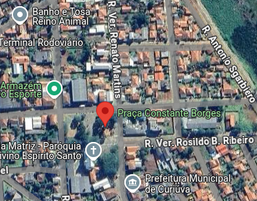
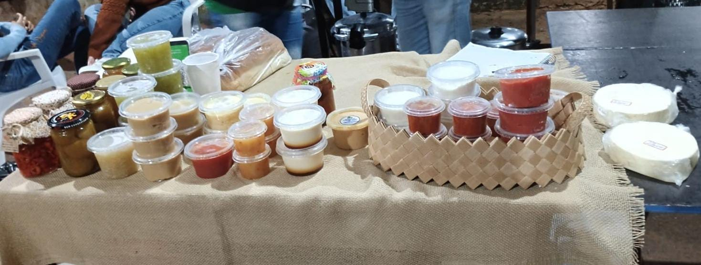
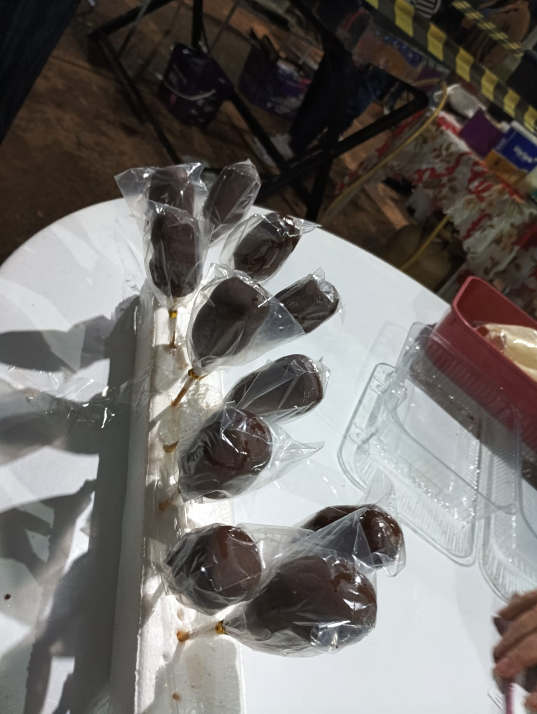
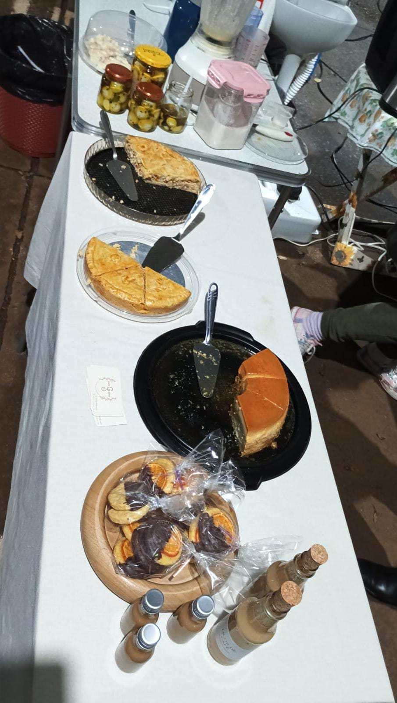

Conheça a Feira do Produtor de Curiúva
...
Produtos Vendidos
...
- Frutas
- Verduras
- Legumes
- Café artesanal
- Frango caipira
- Pastéis
- Doces caseiros
- Pães, bolos e artesanatos
Benefícios da Feira
...
Dias, Horários e Local
...
Galeria de Fotos
...


